Вітальня · журнал «ДентАрт» 2020 №4
Любов Смаглюк: «Бачу ортодонтію флагманом у збереженні загального здоров’я людини»

Сьогодні гостя Вітальні «ДентАрту» — Любов Смаглюк, доктор медичних наук, професор, завідувачка кафедри ортодонтії Української медичної стоматологічної академії, заслужений лікар України і президент Асоціації ортодонтів України. Любов Вікентіївна — авторка понад 300 наукових праць, 35 авторських прав і патентів на корисну модель. Науково-педагогічну діяльність вона успішно поєднує з практикою лікаря-ортодонта у сімейній клініці — відомому медичному центрі «Ортекс СТ».
«Усе в житті невипадкове…»
— Шановна Любове Вікентіївно, ми вийшли з однієї кафедри стоматології дитячого віку, захоплювалися електроміографією в ортодонтії, але потім наші шляхи розійшлися. І мені дуже цікаво дізнатися про Ваш шлях у професії. Добре пам’ятаю Вас студенткою стоматологічного факультету, яка ще й працювала на кафедрі стоматології дитячого віку. Як Ви обрали професію стоматолога? Це було закономірне рішення чи випадковість?
— Коли мене запитують, чи хотіла б я змінити свій шлях, свій вибір професії, якби можна було повернутися у минуле, я кажу — ні! Чому я обрала стоматологію? Можна сказати, що це та випадковість, що насправді є закономірністю.
У моїй родині лікарів не було, але в нашому родоводі, наскільки я змогла його дослідити, було багато науковців, учителів, особливо по лінії батька. Так, мій дідусь Феодосій Ілліч Грінчук викладав математику, працював директором школи в селі Олешин Хмельницького району, дуже гарно грав на скрипці. Був неординарною особистістю, про нього односельці говорили багато теплих слів. Під час Другої світової війни пропав безвісти, і мій батько залишився сиротою. Серед наших родичів є доктор біологічних наук В. І. Дуда, доктор економічних наук О. О. Ткаченко, доктор медичних наук Р. О. Ткаченко. І ніби так ніщо генетично не пов’язувало мене саме зі стоматологією. У той час як зовнішнє середовище достатньо вплинуло на мій вибір професії.
Я народилася у Полтаві, і в 1967 році ми переїхали у квартиру в новозбудованому будинку неподалік Білої альтанки, такого примітного місця Полтави. А того року якраз у наше місто переїхав з Харкова медичний стоматологічний інститут, і в цьому будинку поселилося багато викладачів інституту (нині це Українська медична стоматологічна академія): професори Анатолій Карлович Ніколішин, В’ячеслав Васильович Рубаненко, Петро Петрович Бачинський, Юрій Петрович Костиленко, Микола Петрович Сисоєв, доцент Людмила Григорівна Павленко. Разом з їхніми дітьми минали роки мого дитинства, ми ходили в одну школу і разом проводили вільний час у дворі.
А в 1976 році Петро Петрович Бачинський узяв свою доньку Оксану і мене із собою у секцію настільного тенісу при медичному інституті. Цей вид спорту мені припав до душі, я успішно грала в команді медінституту, стала чемпіонкою Полтави, однією із чемпіонок України, кандидатом у майстри спорту. Настільний теніс сприяв формуванню таких якостей, як кмітливість, уміння швидко сконцентруватись і знаходити оптимальні рішення у складних обставинах.
Спілкування з лікарями у мене відбувалося як пацієнтки із самого дитинства, і певне уявлення про цю професію я мала. Так, двічі на рік протягом десяти шкільних років я приходила на прийом до Людмили Григорівни Павленко з приводу лікування флюорозу зубів. Пізніше, коли я стала вже студенткою, Людмила Григорівна ставила мене за приклад як одну з найдисциплінованіших пацієнток у її житті, котра бездоганно проходила електрофорез, відбілювання та інші призначені процедури.
Я народилася дуже кволою, лікарі не дозволяли перевантажень і навіть виписували мені довідки, що звільняли від іспитів, але моя мама мені сказала: «Ти будеш складати всі іспити, проходити всі випробування. Тобі жити в цьому світі, і ти маєш навчитися долати труднощі…»
Ця материнська настанова стала для мене важливим уроком, який допоміг загартуватися і навчив долати життєві тягарі і проблеми.
Коли треба було вирішувати, куди вступати навчатися, мені дуже хотілося стати перекладачем, подобалася англійська мова. Але у Полтаві таких вузів не було. І тут вирішальну роль зіграло те, що я виступала багато років за медінститут у команді з настільного тенісу: тренер радив мені вступати на стоматологічний факультет, і батьки цю ідею підтримували. Однак першого року я не добрала пів бала. Рік роботи препаратором на підготовчому відділенні вузу по-справжньому зацікавив мене в напрямку стоматології, і я вже чітко зрозуміла, чого хочу.
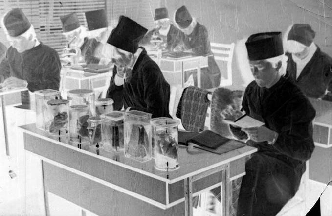
Наступного 1981 року я вступила на стоматологічний факультет. Оскільки я людина відповідальна, дисциплінована і поставила перед собою певні цілі, то навчалася на відмінно.
І знову ж повторю — усе в житті невипадкове. Працюючи препаратором на підготовчому відділенні, я самостійно за посібником з друкарської майстерності навчилася гарно друкувати на машинці. Пізніше професор Анатолій Карлович Ніколішин казав: «Ти на своїй машинці, мов на піаніно, граєш». Справді, я грала на фортепіано, і, мабуть, пальці були здатні до того, щоб друкувати на машинці швидко й гарно. Це вміння відіграло певну роль у моєму житті. Коли першокурсницею я прийшла здавати документи в комітет комсомолу, Михайло Дмитрович Король несподівано повів мене на перший поверх, де в лівому крилі адміністративного корпусу була кафедра оперативної хірургії та топографічної анатомії, як потім з’ясувалося, до Миколи Сергійовича Скрипнікова, і каже: «Мені здається, вона нам підійде…» Це я розповідаю, щоб пояснити, що в подальшому підробляла в академії не тому, що конче того бажала чи гроші були потрібні, а тому, що запотребилося моє вміння друкарки. Відтак студентське моє життя дуже тісно пов’язане з кафедрою оперативної хірургії та топографічної анатомії, з людиною-епохою для академії — Миколою Сергійовичем Скрипніковим.
Він дозволив мені звільнитись через три роки, коли я була захворіла.
Але тут де не взялися Ви, Сергію Володимировичу. Ви разом з Лією Петрівною Григор’євою мене переконували, щоб я йшла працювати на кафедру стоматології дитячого віку. Я з півроку не погоджувалася, бо ж не хотілося ще якихось навантажень, окрім навчання, але на четвертому курсі пішла таки працювати на півставки на кафедру стоматології дитячого віку. Там тоді були усі фахи: і хірургія, й ортодонтія, і терапевтична стоматологія, тож для мене, студентки, тут усе було цікавим і повчальним.
І я дякую долі за можливість пройти і таку школу в досягненні мети, яка ще більше навчила мене організовувати свій день з точністю до хвилини і планувати наступний день напередодні.
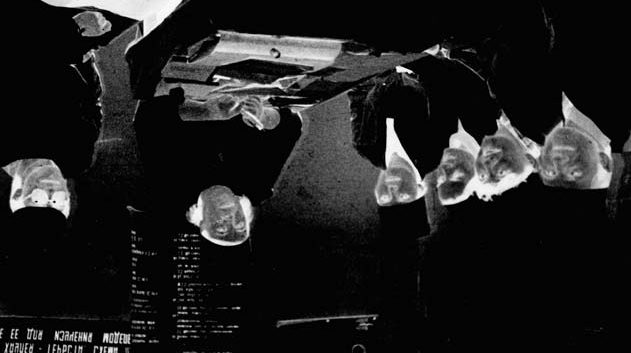
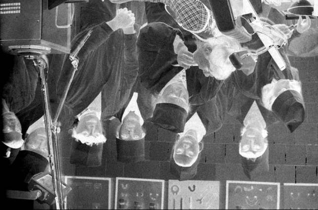
«Навчаючи студентів, навчаємося і самі…»
— Наша Alma Mater, Українська медична стоматологічна академія, наступного року відзначатиме своє 100-річчя, і все Ваше професійне життя тісно пов’язане з нею… Наскільки легко Вам дався академічний шлях від студентки стоматологічного факультету до завідувачки кафедри?
— Моє професійне життя стовідсотково пов’язане з Українською медичною стоматологічною академією. Я цього хотіла ще в студентські роки. Моя одногрупниця Лариса Бачурська якось сказала, що ніхто з однокурсників не сумнівався, що я маю мету працювати в академії, бути науковцем. Перші наукові доповіді я робила у студентські роки під керівництвом Віри Дмитрівни Куроєдової (вона була науковим керівником студентського гуртка і куратором моєї академічної групи №10), завойовувала призові місця, їздила на студентські наукові конференції в інші міста. Це були перші незабутні миті відчуття гордості і впевненості у своїх силах на нелегкому науковому шляху.
Нинішній ректор академії В’ячеслав Миколайович Ждан часто говорить, що УМСА — це бренд, це Alma Mater фахівців із сучасним клінічним і науковим мисленням. І я всім своїм життям, працею прагнула підкріплювати такий бренд, бути завжди на передовій.
Наскільки легким був мій шлях від студентки до завідувачки кафедри? Коли відбувався розподіл, я вже не уявляла для себе іншого вибору, ніж праця в рідній академії. І разом з Тетяною Копяк (нині професор Тетяна Олексіївна Петрушанко) була рекомендована в клінічну ординатуру; це був перший рік, коли запровадили таку можливість — без досвіду роботи в практичній охороні здоров’я вступати до клінічної ординатури. Зауважу, що конкурс у клінічну ординатуру був великий, але я виграла його, бо вже мала друковану роботу, виступала на конференціях, була відмінницею…
Отже, мій шлях довжиною 30 років був від препаратора, лаборанта, клінічного ординатора, аспіранта, асистента і доцента кафедри через докторантуру до професора і завідувачки кафедри…
2010 року в УМСА було створено кафедру ортодонтії — одну з перших у країні суто учбових кафедр, яку мені й випала честь очолити. До того я набула чимало досвіду на кафедрах післядипломної освіти лікарів-ортодонтів, післядипломної освіти лікарів-стоматологів, пропедевтики ортопедичної стоматології з ортодонтією.
Я не можу без викладацької роботи. Викладаючи той чи інший матеріал, навчаючи студентів, обговорюючи певні моменти практичної роботи, ми навчаємося і самі, доходимо до якихось істин.
— Docendo discimus — навчаючи інших, вчимося самі…
— Так. Я дуже люблю проговорювати вголос деякі моменти клінічної ситуації. Коли людина говорить, у її мозку виникають певні імпульси, і до неї швидше приходить правильне рішення.
— На наш вибір впливають стіни, обставини і наставники… Ми обоє називаємо себе послідовниками своєї Вчительки з великої літери Лії Петрівни Григор’євої, визначного лідера ортодонтії в Україні і Радянському Союзі. У чому найбільше був вплив Лії Петрівни на Ваш шлях у професії?
— Коли я прийшла у клінічну ординатуру, моєю наставницею була Людмила Григорівна Павленко. Дуже вдячна їй за розуміння деяких філософських питань у стоматології. Я пліч-о-пліч з нею проводила консультації. Ми дуже часто разом ішли додому, і вона розповідала мені про важливі сторінки свого життя. Людмила Григорівна була неординарною особистістю, не лише грамотним фахівцем у стоматології, але й багатогранною, артистичною, художньою натурою, дуже людяною. І це також не могло не вплинути на мене.
Коли у клінічній ординатурі настала черга вивчати ортодонтію, я щочетверга ходила на консультації, які проводила Лія Петрівна Григор’єва. І мене завжди вражало її вміння знаходити спільну мову з усіма пацієнтами.
Запам’ятався один випадок. Лія Григорівна запитує у хлопчика-пацієнта: «Твоя бабуся знає про цей апарат?» А дитина відповідає: «Це не бабуся, це моя мама…». Як завжди, і того дня ми обговорювали підсумки консультаційного прийому, і Лія Петрівна зауважила: «Бачиш, яку я сьогодні зробила помилку? Назвала маму дитини бабусею. Слід було запитати хлопчика, з ким він прийшов. Я могла образити дитину, назвавши його маму бабусею…»
Я це запам’ятала назавжди. Любов і повага до пацієнта — це найголовніше, що я відчувала кожної миті спілкування з Лією Петрівною.
Крок за кроком, день за днем вели мене до можливостей сягнути у професії певного рівня.
Дуже напруженим, але продуктивним був період написання кандидатської дисертації. Я вивчала прикус у дітей дошкільного віку, бігала по дитсадках, обстежувала дітей і знімала відтиски зі щелеп. Складнощі були в тому, що мені потрібно було спостерігати дітей у динаміці, протягом трьох років. А діти міняли дитсадок, батьки могли взагалі змінити місце проживання, і у мене багато матеріалу відпало.
Коли робота вже підходила до завершення, Лія Петрівна передивилася кожен випадок, який я аналізувала у своїй дисертації на тему «Стан прикусу та функціональна активність м’язів щелепно-лицьової ділянки у дітей у віковий період від 3 до 6 років у нормі та при різних формах прогнатичного співвідношення зубних рядів». У мене донині зберігається купа моделей, електроміограм, досліджень, які тоді робилися. Професор Григор’єва прискіпливо зі мною вивчала ці випадки, і були такі, що вона говорила: «Це ти займаєшся гіпердіагностикою…». Це був неперевершений досвід наукової роботи, який заклав фундамент на подальше професійне життя.
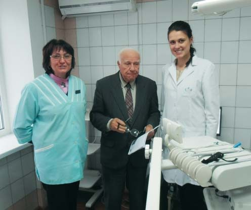
«Учні — це ті, хто прагне працювати в руслі тієї філософії, яку ти сповідуєш»
— Тепер Ви очолюєте кафедру ортодонтії УМСА і готуєте своїх послідовників у професії… Ваші студенти як з України, так і з-за кордону, багато хто навчається англійською. В яких студентів більше можна вкласти філософії, досвіду, практики — українських чи іноземних?
— Завідування кафедрою накладає певну відповідальність за тих, хто працює під твоїм керівництвом. І безумовно, неможлива робота науковця, викладача без учнів. Під моїм керівництвом захистилися п’ять кандидатів наук. Але не про кожного з цих п’яти я можу сказати, що це мій учень. Учні — це ті послідовники, які мислять так, як ти, і прагнуть працювати в руслі тієї філософії, яку ти сповідуєш.
Моя лікарська філософія сформувалася під впливом професора Лії Григор’євої — це філософія функціоналіста, тобто ортодонта, який надає перевагу функціональним методам діагностики і лікування, коли кожен пацієнт із зубощелепною аномалією розглядається через призму його загальносоматичного стану. Ця ортодонтія більше спрямована на дітей та підлітків, у цьому віці відбувається активний ріст і розвиток зубощелепного апарату, і саме функціональне лікування спрямоване на відновлення функцій, і не тільки щелепно-лицьових, а всього організму.
Я багато працюю з іноземними студентами, під моїм керівництвом захищено п’ять магістерських робіт англійською мовою. Це були перші роботи в академії, що захищалися англійською.
Я була керівником більш ніж 30 клінічних ординаторів-іноземців. Вони з різних країв світу — арабських країн, Грузії, Болгарії… І я не можу сказати, які студенти — українські чи іноземні — сприйнятливіші до професійної інформації. Це залежить від конкретної людини, її особистісних якостей, мотивації, життєвої мети.
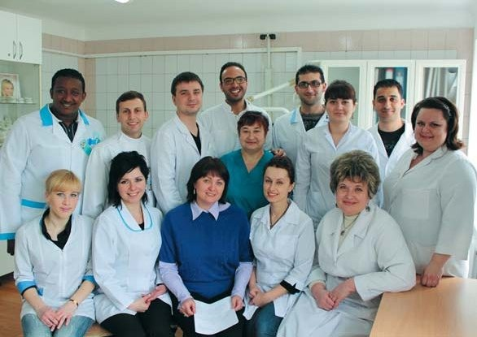
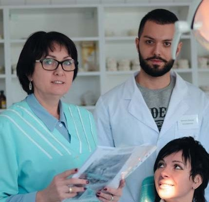
«Якби не практична робота в „Ортексі", я б не змогла написати таку дисертацію»
— Кафедра відбирає практично весь час, про неї треба думати постійно. Ми знаємо багато прикладів, коли науковець і викладач повинен зробити вибір: або академічна активність, або приватна практика… Як Ви знаходите час бути активною і в академії, і в «Ортексі»? І що спонукало Вас до відкриття приватної клініки?
— Коли в Україні вперше з’явилися брекет-системи, вони мене не могли не зацікавити. Треба було їхати навчатися. Знайшлися спонсори, які проплатили моє навчання. Я оволоділа цією методикою. Але це дороговартісна техніка, і використовувати її можна було лише за рахунок плати пацієнтів. І тому ми з чоловіком Валерієм Івановичем 1993 року зареєструвалися як ФОП, орендували кабінет під приватну практику. Зіткнулися тоді з недовірою деяких колег. А от Лія Петрівна мене підтримувала і в цьому. Я вже працювала на іншій кафедрі, але раз на тиждень заходила до неї в кабінет, іноді вона сама мене викликала, щоб обмінятися інформацією. Вона казала: «У мене стільки учнів, але ти одна така, що й захистилася, і маєш свій бізнес».
Ясна річ, було нелегко. Багато років я працювала без вихідних: з понеділка по п’ятницю — в академії, а в суботу й неділю — у приватній практиці. Сьогодні я розумію, що таке поєднання створювало умови для професійного зростання і надавало мені можливість брати участь у міжнародних конгресах, симпозіумах і майстер-класах, що потребувало чималих фінансових витрат.
Лія Петрівна радила мені писати докторську дисертацію на тему дистальної оклюзії та СНЩС. Але в той час я ще не була готова до такої роботи, і тому відповідала, що мені ще треба набратися досвіду. Тут мене також дуже підштовхував чоловік: «Ти можеш, і ти повинна це зробити». Через певний час я взялася за цю справу, пам’ятаючи настанови і побажання Лії Петрівни.
Планування докторської дисертації було досить складним, мені два роки не затверджували тему, республіканська проблемна комісія в Києві все щось підкориговувала. Також тоді вийшов закон про заборону експериментів на тваринах і зменшення кількості рентгенологічних досліджень, і мені довелося відмовитися від деяких планованих експериментів.
Тема докторської викристалізувалася як «Сучасні методи лікування дистальної оклюзії зубних рядів. Помилки та ускладнення». Науковим консультантом я обрала професора Олега Васильовича Рибалова, тому що у нас були спільні думки, спільні пацієнти. Він неординарна особистість, мені казали, що з ним працювати буде складно, наполегливо пропонували поміняти наукового керівника, але я цього не зробила і сьогодні можу сказати, що методологічний підхід Олега Васильовича, його наукова прозорливість допомогли мені написати дисертацію.
Якби не практична робота в нашому «Ортексі», не пацієнти, яких я лікувала, я б не могла написати таку дисертацію. Робота суто практична, на досвіді десяти років, на кожній сторінці — клінічний випадок, і подано результати лікування, помилки та ускладнення через 3-5 років після завершення корекції прикусу. Коли Микола Сергійович Скрипніков її прочитав, то сказав: «Уперше бачу докторську з таким вагомим практичним підґрунтям».
Свого часу, наприкінці 80-х — на початку 90-х років, я багато працювала у медичній бібліотеці в Москві, у дисертаційному залі. Велике враження справила на мене докторська дисертація Людмили Ільїної-Маркосян «Значення раннього ортопедичного лікування для запобігання стійким деформаціям прикусу і обличчя». Три томи, всі історії хвороби подані повністю. Потім я бачила таку працю Лоуренса Ендрюса (Lawrence Andrews) з Каліфорнії, США, коли він читав лекцію в Києві з оптимальних ключів оклюзії на основі вивчення 120 пар моделей щелеп пацієнтів і продемонстрував кожну історію хвороби у своїй монографії. Це мені дуже імпонує. Я сприймаю нову інформацію добре, але й критично. В ортодонтії не може бути «візьміть спробуйте» — важливо бачити результат через певний час. А фірми часто кажуть «візьміть спробуйте», хоча матеріал чи технологія ще не засвідчили довготривалого ефекту.
— Справді, результати треба оцінювати через 3-5 років, а деякі фірми хочуть відразу, шукаючи собі просто пропагандистів, а не експертів…
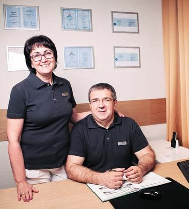
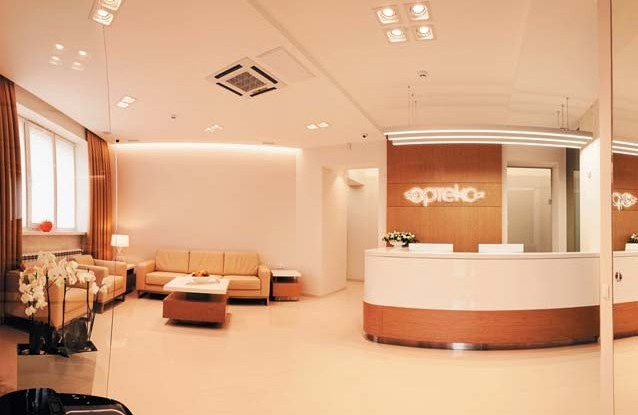
«Професійна інтуїція разом із розвитком цифрових технологій — велика сила!»
— Я був ортодонтом тоді, коли були знімні апарати, коли успіх лікування дуже залежав від людського фактора, від пацієнта, наскільки він дисциплінований, наскільки все робить правильно. А яка ортодонтія нині і яку Ви бачите в майбутньому?
— Я не можу відокремити себе як ортодонта дитячого чи дорослого. Я взагалі не розумію такого відокремлення. Ортодонтія для дітей та підлітків не може бути інакшою, як на функціональних апаратах. Але дуже часто потрібне двоетапне лікування, коли ми супроводжуємо ріст дитини, розвиток щелепної ділянки із 7 років і переходимо до певних корекцій, коли вже є постійний прикус.
Що ж до дорослих пацієнтів, то тут дещо інша тактика, інші цілі лікування. Більшості, а це майже 80 % дорослих пацієнтів, потрібна ортодонтична підготовка зубощелепної системи до протезування і повної стоматогнатичної реабілітації. А у дитини це ортодонтичний супровід росту і розвитку щелепно-лицевої ділянки, і сьогодні з впевненістю можу сказати — усього опорно-рухового апарату. Я отримую величезне задоволення, коли дитина, і безумовно, її батьки витримують 5-6 років лікування, і результат просто фантастичний!
У мене є пацієнти, яких я майже не лікую пластинками, а просто вчасно даю потрібні рекомендації. Коли батьки у таких випадках перепитують: «Так що, ми вже пластинку не будемо робити?» — я пояснюю: «У Вашої дитини все супер! Ми з вами вчасно змогли зробити ті дії, які тепер дають можливість взагалі не застосовувати ортодонтичний апарат».
У сучасної людини багато проблем, пов’язаних зі станом зубів, прикусу, оклюзії і загальним станом здоров’я. Тому я бачу ортодонтію у майбутньому як профілактичну у збереженні і відновленні загального здоров’я людини. Але починати робити це треба відразу після народження дитини, бо є багато чинників, які впливають на розвиток зубощелепної системи. Я не говорю про генетичні чинники, про спадковість, ми її не переборемо. Ми можемо лише дати певні рекомендації для того, щоб не погіршувалася ситуація. Але є дуже багато моментів, яким ми можемо запобігти. І тому я бачу ортодонтію як флагмана у збереженні загального здоров’я людини.
Одна з настанов Асоціації ортодонтів України: дитину слід показати ортодонтові до 6 років.
— Сьогодні диджіталізація у стоматології, і в ортодонтії передусім, стає всеохопною. На останній виставці в Кьольні, наприклад, «Дентсплай» презентувала таку технологію, що ортодонт робить перелік потрібних досліджень, відсилає це на фірму, в якийсь єдиний центр, там усе моделюють, роблять проєкт і надсилають у готовий спосіб — чи це елайнери, чи брекет-системи. Чи не суперечить це тому, що ортодонт має мислити, і мислити системно? Розвиток цифрових технологій полегшить роботу ортодонта чи забере у нього роботу?
— Сучасний світ — це світ цифрових технологій, і я за те, щоб вони входили в нашу професію. Я навіть виступала з доповіддю про це, коли ми відкривали секцію цифрової ортодонтії в Асоціації ортодонтів України. Цифрові технології покликані допомагати у діагностиці, запобіганні помилкам та ускладненням, у прогнозуванні результатів ортодонтичного лікування, у виготовленні індивідуальних апаратів, це нині також активно впроваджується. Але вони не замінять досвід, професійне мислення та інтуїцію лікаря. Професійна інтуїція формується тоді, коли лікар уміє мислити, аналізувати, прогнозувати, а для цього потрібен досвід. Тільки поєднуючи мислення лікаря з роботою рук і цифри, ми можемо мати якісні результати. Професійна інтуїція разом із розвитком цифрових технологій — велика сила! Ось таке моє ставлення до процесу диджіталізації.
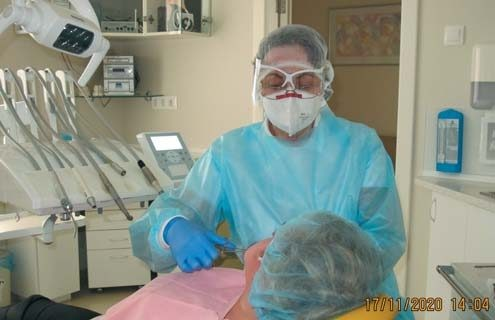
«Маємо захищати здоров’я пацієнтів і медперсоналу»
— Як працюють ортодонти, зокрема вашого «Ортекса», в умовах пандемії?
— Сьогодні весь світ переживає складні часи, занепокоєні цією проблемою лікарі всіх країн. З приводу роботи в умовах пандемії я навіть мала розмову онлайн з Пабло Ечеррі (Pablo Echarri), доктором стоматології з Університету Монтевідео, президентом Європейського товариства лінгвальної ортодонтії, і зараз продовжуємо листування на цю тему. В «Ортексі» ми робимо все можливе для захисту пацієнтів і себе. Проводимо анкетування за день до прийому. Якщо всі параметри нас задовольняють, пацієнт приходить на прийом. Ми створюємо такий графік, щоб була перерва мінімум 20-30 хвилин між пацієнтами, не запрошуємо наступного пацієнта, доки попередній не вийшов. Коли пацієнт приходить на прийом, вимірюємо температуру, робимо опитування, і він підписує дві анкети — за попередній день і день відвідин. Якщо приходять діти з батьками, то опитуємо і батьків, і дітей.
Коли у травні ми розпочали роботу після повного карантину, я працювала повністю екіпірована, згідно з рекомендаціями, приймала лише трьох пацієнтів на день. Нині приймаю 6-7 з півгодинною перервою між ними. Працюю в захисному одноразовому халаті, крім тієї форми, яка прасується після кожного прийому в окремій пральній машині, в респіраторі третього рівня захисту, в окулярах і зі щитком, у шапочці і нітрилових рукавичках (на латекс маю алергію).
Звичайно, працювати в умовах пандемії важко, але маємо захищати здоров’я пацієнтів і медперсоналу.
— «Ортекс» раніше працював в одному приміщенні, і Ви з Вашим чоловіком-хірургом працювали поруч. Тепер Валерій Іванович веде прийом в окремому хірургічному відділенні. Коли було краще — тоді чи тепер?
— Постала необхідність створення такого хірургічного напрямку, який би відповідав світовим стандартам. І ми створили другий «Ортекс» в іншому приміщенні, де все, починаючи від вентиляції, було облаштовано під хірургію за цими стандартами.
Ми з Валерієм Івановичем багато що можемо обговорити і вдома, але бувають моменти, коли так би швидко треба хірурга, щоб хоч оком кинув на клінічну ситуацію, а доводиться записувати пацієнта на прийом в інше відділення, інше приміщення. Але інакше не можна, якщо хочемо високих стандартів.
— Ви нині президент Асоціації ортодонтів України. Серед численних громадських професійних організацій стоматологів ця асоціація, на мій погляд, веде чи не найактивнішу діяльність. Над чим нині працюєте?
— Асоціація ортодонтів України (АОУ) створена 1999 року. Сьогодні це справді доволі потужна асоціація, вона об’єднує понад 400 членів. Головна мета асоціації — забезпечення професійного росту її членів задля підвищення якості ортодонтичної допомоги пацієнтам. Але, як і інші асоціації в Україні, ми маємо зараз проблеми, пов’язані із загальними проблемами в медицині, стоматології тим паче. Потрібні такі умови, щоб громадські професійні організації могли надавати підтримку кожному лікареві у певних моментах його професійного життя. Я маю на увазі не професійний ріст і безперервне навчання, тут багато що робиться, а проблеми ліцензування і юридичної підтримки. Сьогодні не кожен лікар-ортодонт правильно усвідомлює свої права і обов’язки як члена АОУ. Тому ми працюємо над активізацією роботи відділень. Зокрема, запланували конференції в кожному регіональному центрі, щоб лікарі-практики набували досвіду доповідачів, бо кожна така доповідь для лікаря — це ріст у його професійних знаннях.
Активно працюємо з молодими ортодонтами — щороку проводимо конференцію молодих ортодонтів. Члени АОУ мають можливість набирати бали на своє портфоліо на конференціях за підтримки АОУ. Хоча, звичайно, бали — не самоціль, головне — знання.
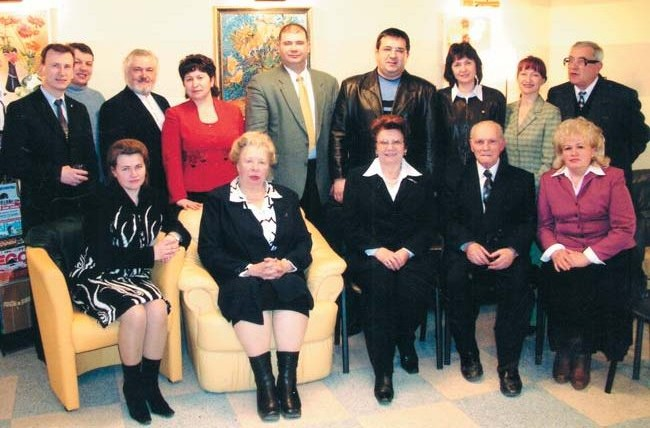
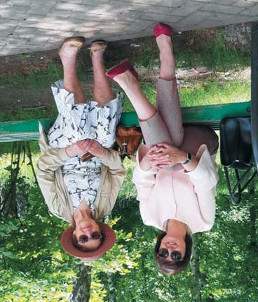
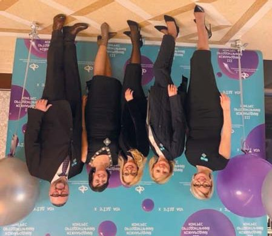
«Було б добре, якби Іванко чи Вірочка стали стоматологами…»
— Я дуже ціную те, що Асоціація ортодонтів України має свою Академію безперервної освіти і організовує так багато конференцій, незважаючи ні на які несприятливі обставини… І ціную те, що Ви так багато часу віддаєте громадській роботі. Родина Вам допомагає? Про підтримку Валерія Івановича ми знаємо. Хтось у Вашій родині успадкував Вашу професію?
— Поки що ніхто. Але надія залишається. Моя родина — це мої батьки (мама в цьому році померла, Царство їй Небесне…), це мій чоловік Валерій — перша і головна моя підтримка й опора, це наша донька Вікторія, зять Олександр і внуки Іванко та Вірочка, їм 9 і 5 років.
Для мене важлива підтримка моєї родини суто моральна, можна сказати, енергетична. Кожна мати знає, що коли у дітей чи внуків якісь проблеми, то й руки опускаються. А коли у них усе добре, тоді відчуваєш окриленість і ладна гори звернути.
Моя мрія знати іноземні мови, напевно, втілилася у Вікторії. Вона закінчила Київський інститут міжнародних відносин, знає англійську, французьку мови. Закінчила факультет бізнесу, економіки, захистила магістерську роботу, потім кандидатську, вчилася в аспірантурі в Національній академії державного управління (НАДУ) при Президентові України, захистила дисертацію на тему оподаткування. Мають із чоловіком спільний бізнес, живуть у Києві. Свого часу ми радили доньці навчатися за кордоном, мовляв, краще можна вивчити іноземну мову, але Вікторія — велика патріотка, вона відповіла: «Я буду жити в Україні, не хочу нікуди переїжджати». І навіть зіронізувала: «Ви що, не хочете мене бачити?..»
— Ваша клініка — це сімейний бізнес, а в сімейному бізнесі завжди є питання, кому його передати у спадок. Ви над цим не замислювалися?
— Я не думаю про це. Ми радили доньці вступати в медакадемію, але вона обрала свій шлях, і якось ми почули від неї: «Я вам дуже вдячна, що ви дали мені можливість зробити, як я хочу. Ви досягли певних висот — і я хочу пройти свій шлях і досягти певних висот».
Але зараз Вікторія говорить, що було б добре, якби Іванко чи Вірочка стали стоматологами…
— Тобто перспектива окреслюється…
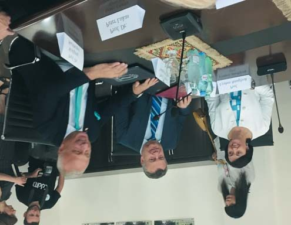
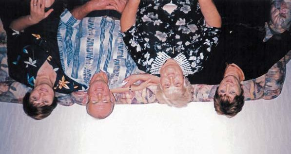
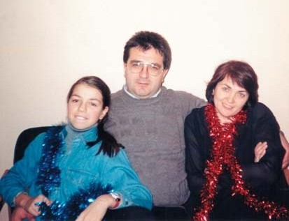
«Подорож — це не місце на карті, це новий погляд на життя!!!»
— Знаю, що Ви з Валерієм Івановичем часто і далеко буваєте за кордоном. Це спосіб зняти стрес щоденної роботи — отакі захмарні подорожі?
— Так, ми з Валерієм Івановичем дуже драйвові. Мені це, мабуть, передалося від батька. Чоловік мій не сприймає літаків, і ми дуже багато їздимо на авто. Долаємо щороку тисячі і тисячі кілометрів, буваємо в різних країнах і отримуємо від цього кайф і релакс. Раніше ми подорожували двічі на рік, потім стали мандрувати три-чотири рази.
Остання наша подорож — це здійснення мрії Валерія Івановича, найдальша, була на Nordkapp, Північний мис у Норвегії — крайню північну точку Європи, як кажуть, край землі. Їхали своїм авто, тричі переправлялися поромом через Фінську затоку, Балтійське та Норвезьке моря. Поверталися через Швецію. Ми проїхали вісім країн, подолали 9 тисяч кілометрів за 17 днів. Отримали емоційний та енергетичний допінг. З моїх спогадів про цю подорож: «Ось він, край землі. Перед очима могутній і спокійний Північний льодовитий океан. Потік напрочуд приємного теплого повітря (того дня було +28), блискуче сонце обпалювало своїм яскравим промінням усіх присутніх у тій точці Землі. Відчуття свободи і неперевершеності, наче ти здолав щось неймовірне в собі. Що приваблює людей у цій точці Землі, що називається Nordkapp? Це переоцінка цінностей, це новий погляд на самого себе як частинку Всесвіту». «Подорож — це не місце на карті, це новий погляд на життя!!!»
Цьогоріч ми планували поїхати на південь Норвегії, наші друзі просили узяти їх із собою, але пандемія не дозволила здійснити ці плани. Та однак щонеділі намагаємося кудись поїхати. Беремо батька, він знає багато цікавих місць в Україні. Їздили в Батурин, Пархомівку, Шарівку… У ці вихідні їздили в Опішню. Хоч ми й буваємо там чотири рази на рік, але цього разу взяли батька. На превеликий жаль, музеї були зачинені через карантин.
Готуючись до майбутніх подорожей, ми маємо мрію про справжній дім на колесах…
Отак і отримуємо драйв, заряджаємося енергією, щоб жити, любити, працювати…
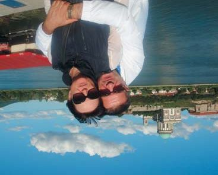
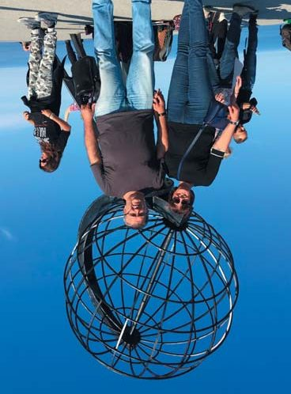
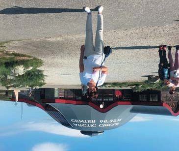
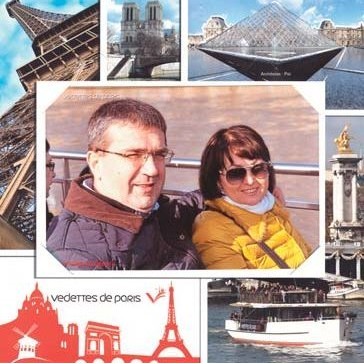
— І на завершення — традиційне побажання читачам «ДентАрту», серед яких багато ортодонтів…
— Для мене дуже відповідально і почесно бути гостею Вітальні «ДентАрту». Вважаю, що це ідеальний журнал, який навчає найсучасніших технологій і сповідує філософію мінімально інвазивного лікування. І я хочу побажати і колективу «ДентАрту», і його читачам рівноваги і стабільності. Бо вважаю, що успішний той фахівець, та людина, яка має певну стабільність у житті. Стабільність — це вміння поєднати особисте життя і бізнес, узгодити свою філософію життя з найсвітлішими прагненнями твого народу, уміння не потрапляти в полон випадковостей чи крайнощів. Набуваймо досвіду, поглиблюймо свої знання задля великої мети — здоров’я і щастя наших пацієнтів!
— Дякую за розмову! Успіхів Вам, Вашому чоловікові й доньці! І нових драйвових подорожей і відкриттів!